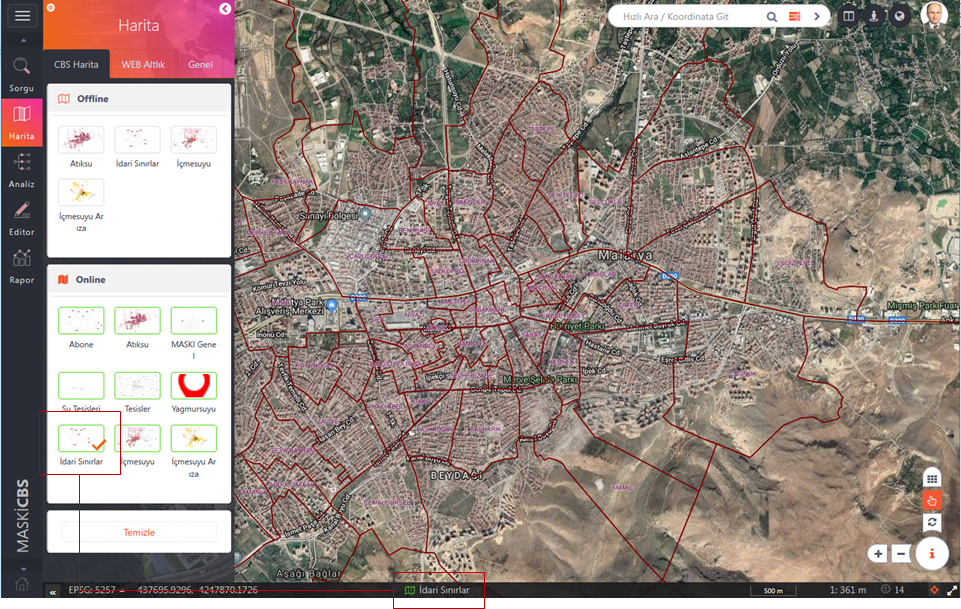
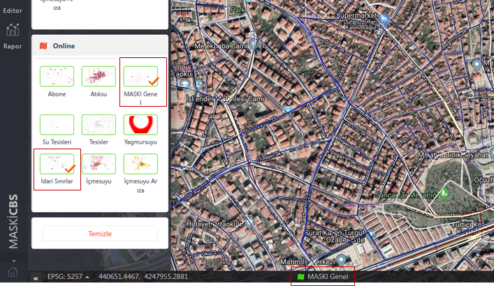

"CBS Haritaları" kullanıcıların farklı ihtiyaçları için oluşturulan değişik sembolojide farklı tabakaları içerisinde barındıran haritalardır. CBS Haritaları ile kurumlarda farklı her bir departman/birime ihtiyaçlarına özel hazırlanan haritalar ile çalışma imkanı sağlanmış olur.
Bu haritalar "Online" veya "Offline" olmak üzere iki kategori adı altında liste halinde panelde görüntülenmektedir.
Offline Haritalar, masaüstü CBS yazılımında oluşturulan CBS haritalarının sembolojileri ile birlikte WMTS(Web Map Tiled Service) olarak hazırlanan uygun karelajlarla farklı zoom seviyeleri için önceden kesilmiş ve saklanmış haritalardır.
Online Haritalar, masaüstü CBS yazılımında oluşturulan CBS haritalarının sembolojileri ile birlikte GeoServer'a aktarılarak canlı olarak yayınlanan haritalardır.
 Kullanımı:
Kullanımı:
1- Çalışılmak istenen harita veya haritalar panelden işaretlenir, harita ekranında işaretlenen haritalar görüntülenir.
2- Kaldırılmak istenen harita üzerine tıklamak yeterlidir. Birden fazla harita işaretlenmişse tümünü kaldırmak için alt kısımda yer alan "Temizle" butonuna basılır.
 İşaretlenen son CBS haritasının adı arayüzün sol alt orta kısmında görüntülenir.
İşaretlenen son CBS haritasının adı arayüzün sol alt orta kısmında görüntülenir.

Birden çok harita işaretlendiğinde harita ikonu içi dolu ve son işaretlenen CBS Haritasının adı ile birlikte görüntülenecektir.
